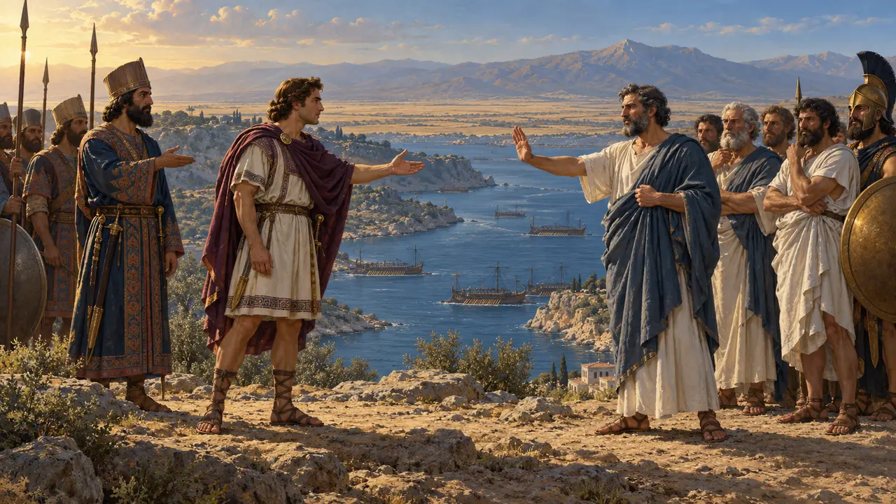
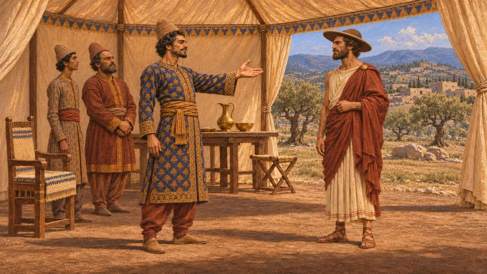
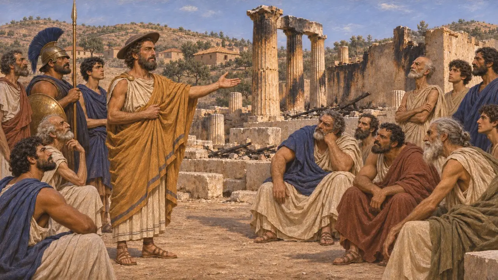
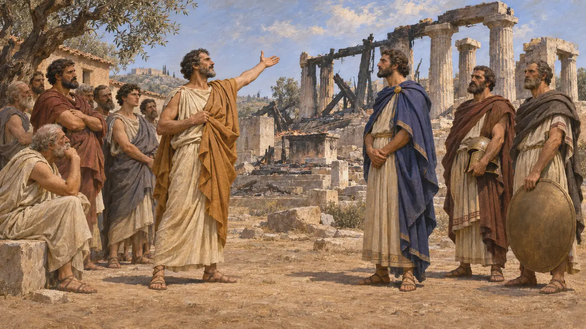
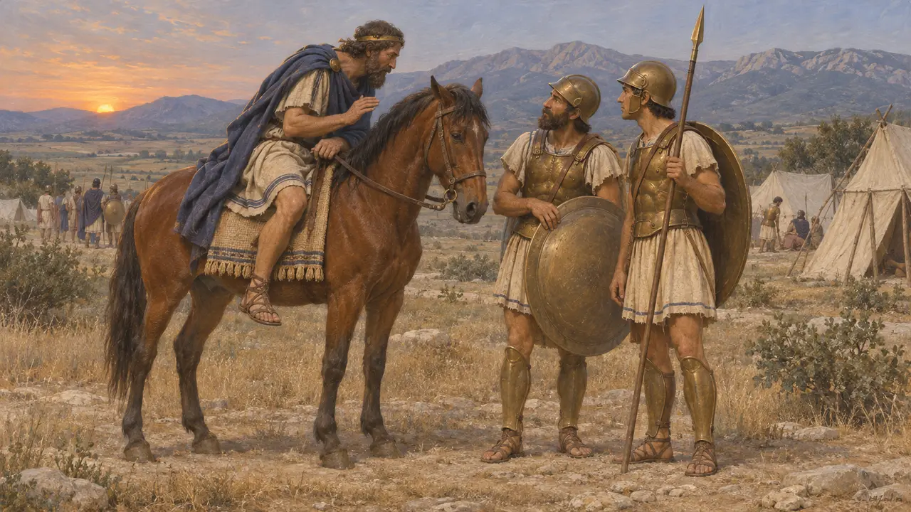
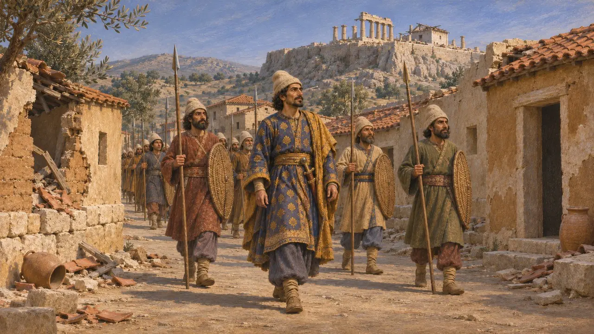

Enzyklopädie › Schlachten und Ereignisse

Die Gesandtschaft Alexanders von Makedonien nach Athen
Ein persisches Friedensangebot, vom König von Makedonien nach Athen überbracht, 479 v. Chr.
Im Spiel: Level 11: Das Finale
Nach Salamis überwinterte Mardonios in Thessalien und versuchte, Athen vor dem nächsten Feldzug für sich zu gewinnen. Er schickte Alexander I. von Makedonien, einen persischen Vasallen mit Verbindungen nach Athen, um die Freundschaft des Königs und großzügige Bedingungen anzubieten. Die Athener lehnten ab, und Herodot machte ihre Antwort zu einer Aussage darüber, was die Griechen verband. Die Weigerung hielt die athenische Flotte auf griechischer Seite, und der Krieg wurde in der Schlacht bei Plataiai entschieden.
Im Spiel: Das Spiel zeigt dies als Ereignis des Jahres 479 v. Chr., in dem Mardonios Alexander nach Athen schickt, um die Freundschaft des Königs anzubieten, und die Athener ablehnen. Es lässt die spartanischen Gesandten und das zweite Angebot aus, das Murychides überbringt.

Mardonios wählt seinen Gesandten
Antiker BerichtHerodot berichtet, Mardonios habe zuerst griechische Orakel befragt und dann aus zwei Gründen Alexander gewählt. Alexanders Schwester Gygaia war mit dem persischen Adligen Bubares verheiratet, sodass er durch Heirat mit den Persern verbunden war. Außerdem war er Proxenos und Wohltäter Athens, ein offizieller Freund der Stadt. Mardonios hoffte, die Athener würden sich mit ihren vielen Schiffen ihm anschließen und Persien die Herrschaft über das Meer verschaffen.
Herodotus 8.133-136

Die Bedingungen des Königs
Antiker BerichtIn Herodots Version überbrachte Alexander eine Botschaft des Xerxes. Der König wolle alles vergangene Unrecht verzeihen, den Athenern ihr Land zurückgeben und ihnen nach eigener Wahl weiteres Land zugestehen, sie sich selbst regieren lassen und die Tempel wieder aufbauen, die sein Heer niedergebrannt hatte, wenn sie ein Bündnis schlössen. Alexander fügte aus eigenem Antrieb den Rat hinzu, die persische Macht sei zu groß, um ihr zu widerstehen, und Attika liege im Weg jeder neuen Invasion.
Herodotus 8.140

Die Antwort der Athener
Antiker BerichtSpartanische Gesandte trafen ein, weil sie fürchteten, Athen könnte annehmen, und boten an, die athenischen Familien während des Krieges zu ernähren. Herodot zufolge erklärten die Athener Alexander, sie würden mit Xerxes niemals Frieden schließen, solange die Sonne ihre Bahn ziehe, und warnten ihn, wiederzukommen. Den Spartanern hielten sie die niedergebrannten Heiligtümer und das gemeinsame griechische Blut, die gemeinsame Sprache, die Götter und Bräuche vor und baten bald um ein Heer in Böotien.
Herodotus 8.141-144

Ein Freund beider Seiten
UmstrittenHerodot stellt Alexander als Griechen im Herzen dar. Er sagt, Alexander habe Jahre zuvor persische Gesandte töten lassen und sei später vor Plataiai zum griechischen Lager geritten, um die Griechen zu warnen. Viele Historiker, allen voran Badian, halten diese Geschichten für makedonische Behauptungen, die nach der Niederlage Persiens aufkamen, um das Bild eines Königs zu bereinigen, der Xerxes treu gedient hatte. Keine persische Quelle erwähnt die Gesandtschaft, und die athenischen Reden sind wohl größtenteils Herodots eigene Komposition.
Herodotus 5.17-22; Herodotus 9.44-45; E. Badian, Herodotus on Alexander I of Macedon, 1994

Was auf die Weigerung folgte
Antiker BerichtHerodot berichtet, Mardonios sei dann nach Süden gezogen und habe Athen ein zweites Mal besetzt, da das Volk erneut nach Salamis geflohen war. Er sandte einen Hellespont-Griechen namens Murychides mit demselben Angebot. Ein Ratsherr, Lykidas, beantragte, es dem Volk vorzulegen, und die Athener steinigten ihn zu Tode. Nach einigem Zögern schickten die Spartaner ihr Heer nach Norden, und der Feldzug endete bei Plataiai.
Herodotus 9.1-11
Quellen
- Herodotus 8.133-144
- Herodotus 9.1-11
- Herodotus 5.17-22
- E. Badian, Herodotus on Alexander I of Macedon: A Study in Some Subtle Silences, 1994
- P. Briant, From Cyrus to Alexander, 2002
- N. G. L. Hammond and G. T. Griffith, A History of Macedonia II, 1979